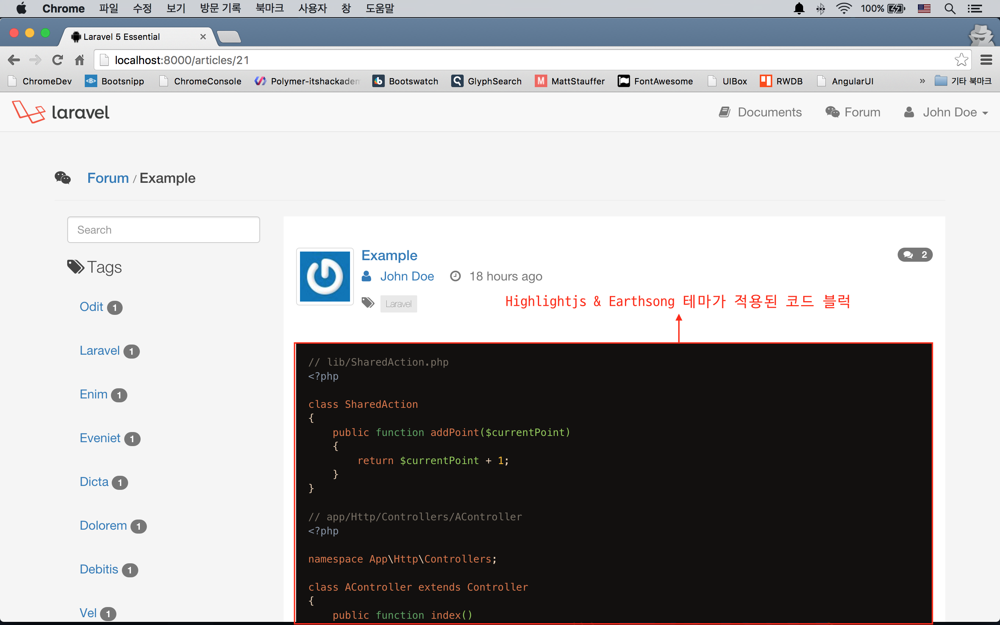
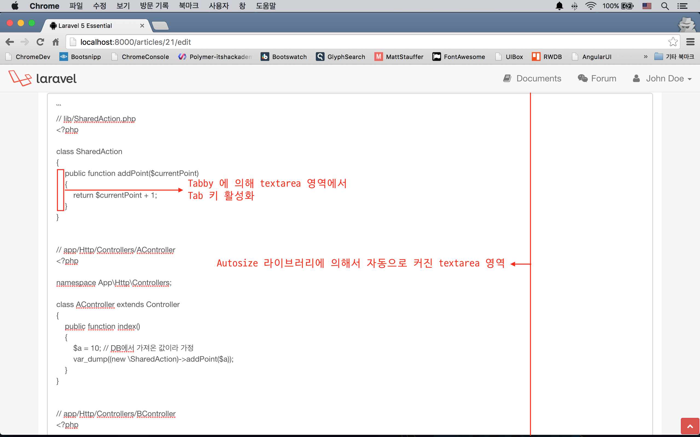
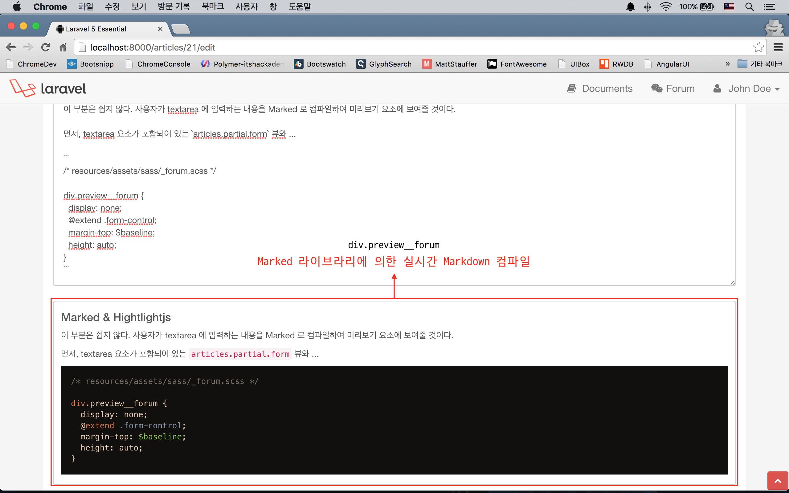
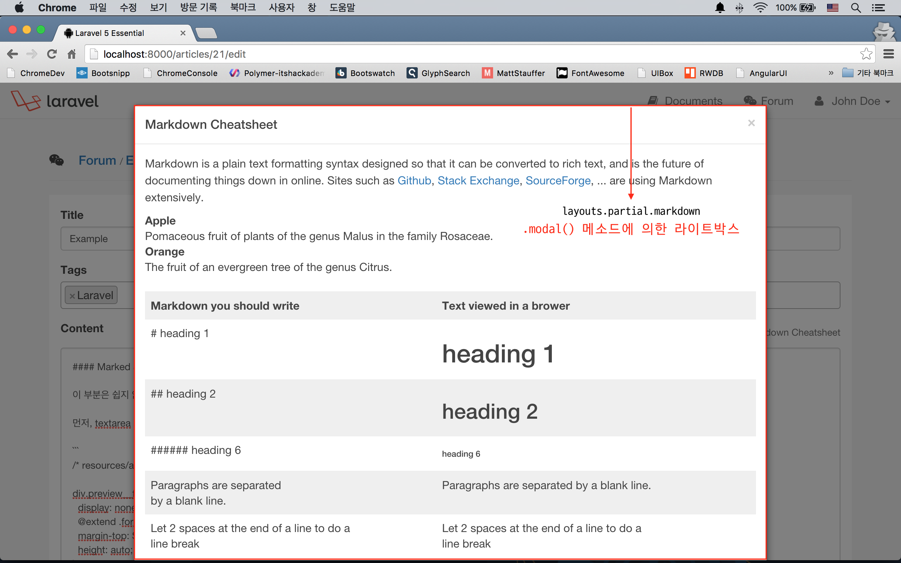
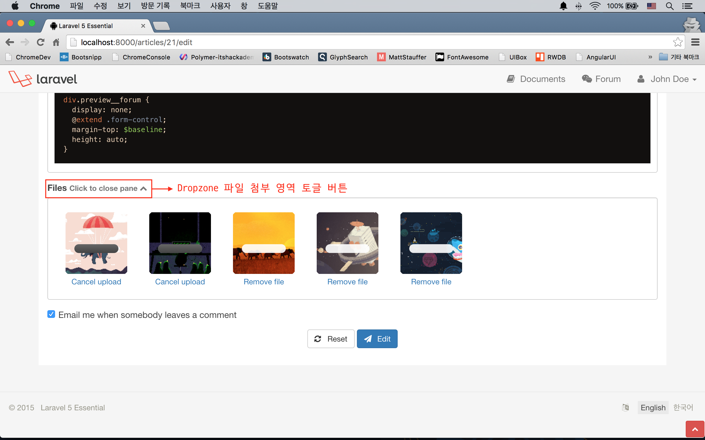
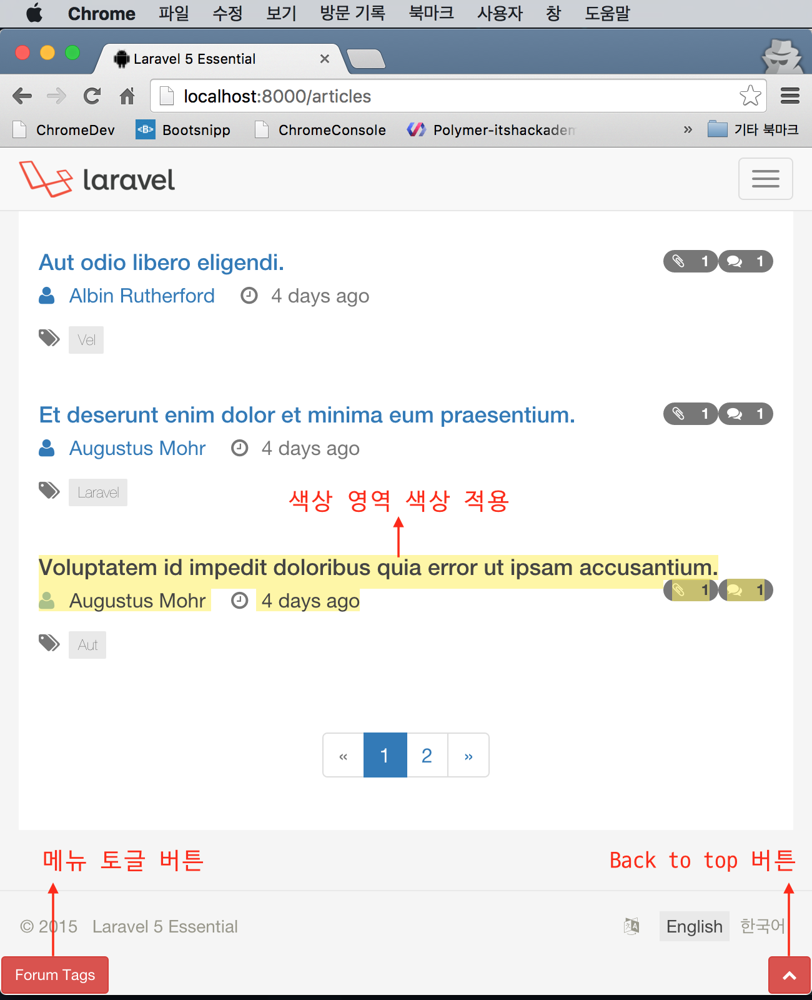

실전 프로젝트 2 - Forum
41강 - UI 개선
이번 강에서 전반적인 UI 개선 작업을 하고, 다음 강에서는 이벤트, 알림, 캐싱 등 서버 사이드 쪽 개선 작업을 하도록 하자. 먼저 무엇을 개선할지 정의하자.
- 포럼 본문 또는 댓글을 쓸 때
- 사용자가 입력하는 내용을 실시간으로 마크다운 컴파일하여 보여준다.
- textarea 요소에서 코드를 쓸 경우를 대비해, Tab 키 입력을 지원하자. (원래는 Tab 키를 치면 다음 요소로 이동해 버린다.)
- 사용자가 입력한 내용이 길어지는 것을 대비해, textarea 요소의 크기를 입력 내용의 양에 따라 자동으로 조절하자.
- 마크다운 문법을 잘 모르는 사용자를 배려하여, 사용법을 페이지에서 보여주자.
- 파일 첨부 UI를 토글할 수 있도록 하자.
UI 콤포넌트 설치
위의 기획에 따라, 필자의 경험과 인터넷 검색을 통해 적절한 프론트엔드 라이브러리를 아래와 같이 선택하였다.
- Fastclick : 모바일 디바이스에서 터치 반응을 개선한다.
- Tabby : textarea 에서 Tab 키 입력을 지원한다.
- Autosize : 텍스트 길이에 따라 textarea 요소의 높이를 자동으로 조정한다.
- Marked : 클라이언트 사이드에서의 마크다운 컴파일 기능을 지원한다.
- Highlightjs : 코드에서 Syntax Highlight 기능을 지원한다. 기존 Google Code Prettify 를 대체한다.
- Earthsong : Syntax Highlight 에서 Earthsong 테마를 입힌다. Highlightjs 내장 테마를 대체한다.
참고 Earthsong 테마는 Dayle Rees 가 개발했다. 그는 라라벨 코어 멤버로 활동할 뿐 아니라, PHP PANDA 등 여러 권의 PHP 서적을 낸 바 있다. 그가 만든 Color Scheme 은 모르는 개발자가 없을 정도로 유명하다. Color Scheme에서 제공하는 다양한 에디터 테마를 보려면 Color Scheme Gallery를 확인해 보자.
# highlightjs를 쓸 것이므로 google-code-prettify 는 제거한다.
$ bower uninstall google-code-prettify --save-dev
$ bower install fastclick tabby autosize marked highlightjs --save-dev
# Bower 콤포넌트가 아니므로, github 에서 raw URL를 따서 CURL 로 다운로드하였다.
$ curl https://raw.githubusercontent.com/daylerees/colour-schemes/master/highlightjs/contrast/earthsong-contrast.css -o ./resources/assets/vendor/earthsong.css빌드스크립트를 수정하자. 수정 후 빌드 코맨드는 이젠 척척 알아서.. $ gulp (or $ gulp --production)
// gulpfile.js
elixir(function (mix) {
mix
.styles([
// ...
'../vendor/earthsong.css',
'app.css'
], 'public/css/app.css')
.scripts([
// ...
'../vendor/fastclick/lib/fastclick.js',
'../vendor/tabby/jquery.textarea.js',
'../vendor/autosize/dist/autosize.js',
'../vendor/highlightjs/highlight.pack.js',
'../vendor/marked/lib/marked.js',
'app.js'
], 'public/js/app.js')
// ...
});포럼 본문 및 댓글 쓰기 개선
Fastclick
쉬운 것 먼저 하자. Fastclick 기능 추가는 attach() 메소드 호출 하나로 끝난다.
// resources/assets/js/app.js
var csrfToken = $('meta[name="csrf-token"]').attr('content'),
routeName = $('meta[name="route"]').attr('content'),
textAreas = $('textarea');
/* Global Settings */
/* Activate Fastclick */
window.addEventListener('load', function() {
FastClick.attach(document.body);
}, false);
/* Set Ajax request header.
Document can be found at http://laravel.com/docs/routing#csrf-x-csrf-token */
$.ajaxSetup({
headers: {
'X-CSRF-TOKEN': csrfToken
}
});작업하는 김에 코드들도 약간 정리했다. csrfToken 부분은 앞 절에서 설명했을 것이다.
textareas 란 글로벌 변수를 주목하자. 이 스크립트는 모든 페이지 로딩시 같이 로딩된다. 즉, 페이지 로딩시 마다, textarea 요소가 있는 페이지에서는 textareas 변수가 셋팅이 된다.
Fastclick 적용 결과는 눈에 딱히 보이지는 않는다. 모바일 브라우저에서 접근해서 확인해야 하는데, 필자도 별로 체감은 되지 않는 것 같다.
Highlightjs
역시 쉽다. 'articles.show' 뷰 등에서는 기존에 작성한 포럼 본문이 표시되고, 코드 블럭을 포함하고 있을 수 있다. 'articles.show' 페이지가 로드되자 마자, 코드 블럭이 있으면 Highlightjs 가 작동한다. 주의할 점은 페이지 로드 이후에 자바스크립트에 의해서 동적으로 DOM에 추가된 코드블럭에는 Highlightjs 가 적용되지 않는다는 점이다.
// resources/assets/js/app.js
/* Activate syntax highlight.
This will affect code blocks right after the page renders */
hljs.initHighlightingOnLoad();
Tabby & Autosize
역시 쉽다. 위에서 textareas 란 변수를 지정한 것을 기억할 것이다. Tabby 와 Autosize 기능은 textareas.length 값이 있을 때만 동작시키는 것으로 했다.
// resources/assets/js/app.js
if (textAreas.length) {
/* Activate Tabby on every textarea element */
textAreas.tabby({tabString: ' '});
/* Auto expand textarea size */
autosize(textAreas);
}
Marked & Hightlightjs
이 부분은 쉽지 않다. 사용자가 textarea 에 입력하는 내용을 Marked 로 컴파일하여 미리보기 요소에 보여줄 것이다.
먼저, textarea 요소가 포함되어 있는 'articles.partial.form' 뷰와 'comments.partial.create', 'comments.partial.edit' 뷰에 미리보기를 표시할 HTML 요소를 추가하자.
<!-- resources/views/articles/partial/form.blade.php -->
<div class="form-group">
<label for="content">{{ trans('forum.content') }}</label>
<textarea name="content" class="form-control forum__content" rows="10">{{ old('content', $article->content) }}</textarea>
{!! $errors->first('content', '<span class="form-error">:message</span>') !!}
<div class="preview__forum">{{ markdown(old('content', 'Preview will be shown here...')) }}</div>
</div>/* resources/assets/sass/_forum.scss */
div.preview__forum {
display: none;
@extend .form-control;
margin-top: $baseline;
height: auto;
}'div.preview__forum' 이란 요소를 추가하고, 처음 로드될 때 상태를 display:none; 로 지정하였다.
유효성 검사 에러가 발생할 경우를 대비해, {{ markdown(old('content', '...')) }} 라고 쓴 것도 놓치지 말자. 포럼/댓글 작성/수정 폼 전송시에는 컴파일되지 않은 Raw 상태로 *Controller::store() 메소드에 전달되고, 유효성 검사에서 튕길 경우, withInput() 에 의해서 사용자가 작성한 폼 값들을 세션에 구워서 폼을 전송했던 뷰로 되돌려 보낸다. 이 때 서버는 뷰를 응답하기 전에, markdown() Helper 를 이용해서 미리 HTML 로 컴파일 된 내용을 'div.preview__forum' 요소에 넣어 놓는 부분이다. 당연히 textarea 요소에는 컴파일되지 않은 Raw 상태를 그대로 뿌리게 된다.
이제 자바스크립트 부분을 보도록 하자.
// resources/assets/js/app.js
if (textAreas.length) {
// Other library activation codes ...
textAreas.on("focus", function (e) {
// Show preview pane when a textarea is in focus
$(this).siblings("div.preview__forum").first().show();
});
textAreas.on("keyup", function(e) {
// Register 'keyup' event handler
var self = $(this),
content = self.val(),
previewEl = self.siblings("div.preview__forum").first();
// Compile textarea content
var compiled = marked(content, {
renderer: new marked.Renderer(),
gfm: true,
tables: true,
breaks: true,
pedantic: false,
sanitize: true,
smartLists: true,
smartypants: false
});
// Fill preview container with compiled content
previewEl.html(compiled);
// Add syntax highlight on the preview content
previewEl.find('pre code').each(function(i, block) {
hljs.highlightBlock(block)
});
}).trigger("keyup");
}먼저 textarea 에 커서가 들어가면 (== 'focus' 이벤트), jQuery의 show() 메소드를 이용하여 'div.preview__forum' 요소를 display: block; 상태로 변경시켰다.
그 다음은 textarea 에 'keyup' 이벤트가 발생했을 때 이다. textarea 에 입력한 내용을 읽어오고, 미리보기를 표시할 요소를 잡아 content, previewEl 변수가 각각 담았다.
marked() 메소드를 이용해서 content 를 컴파일하여 compiled 변수에 담은 후, previewEl 의 내용을 compiled 로 채워 넣었다.
앞서 설명했듯이, Highlightjs 가 페이지 로드 이후에 동적으로 DOM 에 추가된 코드블럭에 대해서는 동작을 못하기 때문에, 이 부분을 처리하는 코드도 추가하였다.

마크다운 사용법 Modal
Bootstrap 에는 Modal 요소를 포함하고 있다. 이를 활용하자.
먼저, Modal에 본문으로 표시될, 마크다운 사용법을 담고 있는 뷰를 만들고, 적절한 위치에 @include 시키자.
<!-- resources/views/articles/partial/form.blade.php -->
<div class="form-group">
<a href="#" class="help-block pull-right hidden-xs" id="md-caller">
<small>{!! icon('preview') !!} Markdown Cheatsheet</small>
</a>
<label for="content">{{ trans('forum.content') }}</label>
<!-- ... -->
</div>
<!-- ... -->
@include('layouts.partial.markdown')
@section('script')
<script>
// Other codes ...
/* Modal window for Markdown Cheatsheet */
$("#md-caller").on("click", function(e) {
e.preventDefault();
$("#md-modal").modal();
return false;
});
</script>
@stop<!-- resources/views/layouts/partial/markdown.blade.php -->
<div class="modal fade" id="md-modal" tabindex="-1" role="dialog" aria-labelledby="myModalLabel" aria-hidden="true">
<div class="modal-dialog modal-lg">
<div class="modal-content">
<div class="modal-header">
<button type="button" class="close" data-dismiss="modal">
<span aria-hidden="true">×</span>
<span class="sr-only">Close</span></button>
<h4 class="modal-title">Markdown Cheatsheet</h4>
</div>
<div class="modal-body table-responsive">
<table class="table">
<!-- Content of markdown cheatsheet ... -->
</table>
</div>
<div class="modal-footer">
<button type="button" class="btn btn-default" data-dismiss="modal">Close</button>
</div>
</div>
</div>
</div>'a#md-caller' 가 클릭되었을 때, modal() 메소드를 호출하는 것으로 처리하였다.

파일 첨부 UI 토글
미리보기까지 들어가면서, 폼이 너무 길어지게 되어 줄일 필요성이 대두되었다. 나머지 폼들은 모두 채워야 하지만, 파일 첨부는 선택적으로 해도 되는 요소이므로, 사용자가 필요할 때만 열어서 파일을 올려 놓을 수 있도록 하자.
<!-- resources/views/articles/partial/form.blade.php -->
<div class="form-group">
<label for="my-dropzone">
Files
<small class="text-muted">
Click to attach files <i class="fa fa-chevron-down"></i>
</small>
<small class="text-muted" style="display: none;">
Click to close pane <i class="fa fa-chevron-up"></i>
</small>
</label>
<div id="my-dropzone" class="dropzone"></div>
</div>
<!-- ... -->
@section('script')
<script>
var dropzone = $("div.dropzone"),
dzControl = $("label[for=my-dropzone]>small");
dzControl.on("click", function(e) {
dropzone.fadeToggle(0);
dzControl.fadeToggle(0);
});
// Other codes ...
</script>
@stop
그 외 추가된 장식들
- Back to top 버튼이 추가되었다. 페이지 스크롤이 발생했을 때 버튼이 표시되며, 누르면 페이지의 맨 위로 이동하는 그거다. (resources/views/layouts/partial/footer.blade.php, resources/assets/js/app.js)
- 모바일에서 Forum, Documents 를 열었을 때 좌측에 표시되던 태그, 문서목록을 숨기도록 하였다. 그리고 뷰 하단에 작은 버튼을 두어 누르면, 목록이 열리도록 하였다. (resources/assets/sass/_mediaqueries.scss, resources/assets/js/app.js)
- 페이지에서 블럭을 잡았을 때, 선택 영역의 색상을 수정했다. (resources/assets/sass/_commons.scss)
